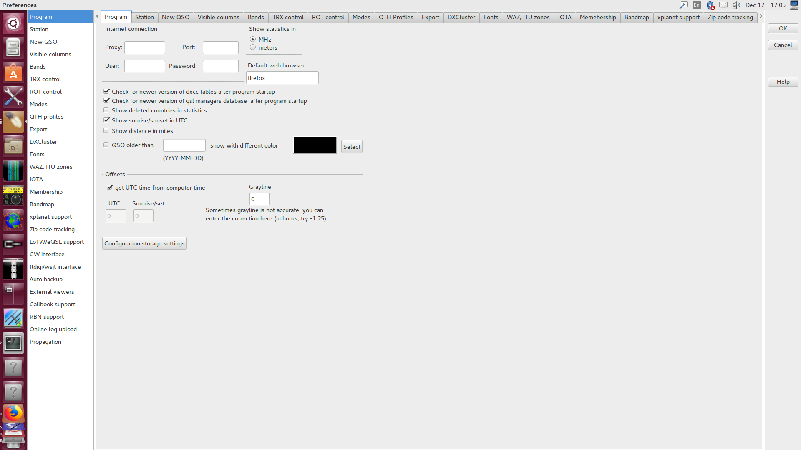
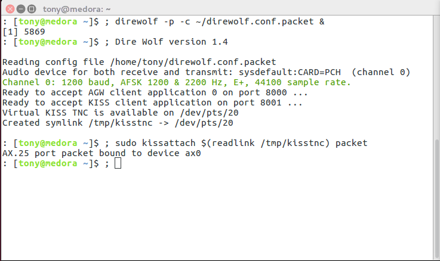

Names of applications or software packages
Literal text
File and directory names
Names of commands
Names of variables and their ${expansions}
inline(codeFragment);
GUI Menu Names, Menu Items, Labels, and Buttons
A Specific Key on your keyboard
Take note of this.
A block quotation from someone or somewhere...
Dire consequences ahead!
10 PRINT "PROGRAM LISTING"
20 GOTO 10
command-prompt$user-supplied inputoutput on the screen
Capabilities of my station, given my particular combination of hardware and software.
The personal experiences of one radio amateur. Your mileage may vary!
Mostly text, some pictures, and totally untested humor.
How to partition your disks, back up your data, install an operating system, or perform basic administration tasks.
Copious detail on how to use the individual programs highlighted here. Some programs will have more detail than others.
How to assemble a slide deck without using the right tool for the job.
Back up your data before doing anything drastic to your computer!
Connect to a dummy load before experimenting with anything that could transmit!
RF can cause weird things to happen on computers. Be prepared to add RF chokes to power and data cables.

Worked on aircraft and their engines at Edwards AFB in the high desert of Southern California.
Took me and my brother to Mojave Airport many times to look at airplanes.
Designed, planned, and built many of the additions to his house!
"Mechanically inclined" would be an understatement.
Voyager Aircraft and Space Shuttle Challenger made quite an impression on a young mind!
U.S. Army intelligence.
Initially licensed in Massachusetts as W1BAN in 1930.
Changed to W6SFI after moving to California in 1941.
Quarter Century Wireless Association #11,768.
Worked CW, SSB, local repeaters, SSTV.
Actively encouraged my interest in computers.
In high school, skipped mechanical physics, went straight for electricity & magnetism.
At UC Berkeley, Joined a student computing club that was most likely to get in trouble with the campus system and network administrators :-)
Learned a few computer langauges, actively pursued a Windows-free existence with heavy use of open-source software.
Always trying to be versatile and curious, favoring UNIX-like computing environments and open-source tools.
Still haven't figured out how to balance in-house workers' time versus paying a vendor for a product.
Combined with my curiosity about things...I'm not management material yet :-)
Still curious about STEM topics. (Just look at my "Watch Later" playlist on YouTube...)
Numbers stations on shortwave radio! What's the deal with that?
Can I build that? (Physically, not in software)
How does that work? What's underneath it?
How little do I need to maximize my capabilities?
Is there a book on it at my local public library?
Receives 24-1766 MHz with external antenna.
Additional software required to demodulate what you receive.
With transverter shift of -125 MHz, can also receive 0-24 MHz!
Covers 0-54 MHz.
CW, SSB, AM, RTTY, digital modes, but no FM.
Up to 100 watts output power.
Covers 136-174 MHz.
Analog FM only!
5 to 65 watts output power.
Totally manual and passive.
2 antennas, 12-position inductor, 2 variable capacitors.
Connectors for coax or balanced line.
Can handle up to 300 watts.
Integrated dummy load and SWR meter; handy for testing!
Enables digital modes for older or less featureful transceivers.
While testing, make sure to have a dummy load handy!
Turns a USB port into a software-controlled straight key.
Earn dirty looks from hard-core mechanical key enthusiasts!
Set up your rig to expect a straight key, or disable its internal keyer.
Alpha-Delta DX-EE multi-band dipole, covers 40-6 meters.
Copper pipe J-pole, covers 2 meters & 70 centimeters.
End-fed 120-foot long wire, covers 160-60 meters.
16 GB memory. Probably too much, but software only grows over time...
250 GB solid-state disk -- definitely too much, but far faster and quieter than spinning platters of rust!
Intel Core i5, 2.7 GHz, 4 cores -- probably overkill.
Mini-ITX form factor motherboard and case -- nice and compact!
Probably the best combination of user-friendly desktop environment plus all the low-level command-line power tools you could want, with a very low price (your time and effort).
Can take advantage of packaging work done by Debian -- very important for easy acquisition of ham-related software!
Not actually my preferred operating system (FreeBSD) but more popular and thus better supported. Besides, much open-source software is written for Linux first.
Download an image from the web site, burn it to USB stick or DVD, and install.
Most application software can be installed from the Ubuntu Software application.
Web browser: Chromium or Firefox
Mail reader: Evolution or Thunderbird
Office suite: LibreOffice
Linux and UNIX-like operating systems have a long history of providing very focused tools that are very good at what they do -- and nothing else -- and encouraging users to combine those tools to accomplish their tasks.
This generally means that:
You must get friendly with your keyboard.
You must find where the terminal program is.
Even if you have a nice graphical environment, you must get comfortable entering commands at a shell.
You must learn a text editor: Vim (descendant of the venerable vi), Emacs or nano
You need not publicly take sides in the long-running Emacs versus vi holy war. :-)
By adding additional software repositories beyond those that come with Ubuntu, you gain access to ham-related software and you also make it easier to install updates later!
https://help.ubuntu.com/community/Repositories/UbuntuAfter you find an interesting repository, you can add it with the instructions on that page. If you're the command-line type, you can (e.g.):
[yourself@workstation ~]$sudo apt-add-repository ppa:ubuntu-hams-updates/ppa[yourself@workstation ~]$sudo apt-get update
Since you are a radio amateur, you may want to look into these repositories:
WSJT-X for weak signal work:
ppa:ki7mt/wsjtx
CQRLog for logging:
ppa:ok2cqr/ppa
FLDigi for digital modes:
ppa:kamalmostafa/fldigi
A lot of other software related to amateur radio:
ppa:ubuntu-hams-updates/ppa
Serial ports are commonly used by amateur radio hardware to allow computer control.
Lots of devices have USB-to-serial hardware built in.
Most serial ports have boring, indistinct names that are allocated as the devices are plugged in and/or powered on.
[yourself@workstation ~]$ls -l /dev/ttyUSB*crw-rw---- 1 root dialout 188, 0 Dec 9 20:56 /dev/ttyUSB0 crw-rw---- 1 root dialout 188, 1 Dec 2 17:59 /dev/ttyUSB1 crw-rw---- 1 root dialout 188, 3 Dec 9 23:27 /dev/ttyUSB3
However your operating system may also provide more descriptive names that are not based on when the device was plugged in.
[yourself@workstation ~]$ls -l /dev/serial/by-id/total 0 lrwxrwxrwx 1 root root 13 Dec 9 20:56 usb-1a86_USB2.0-Serial-if00-port0 -> ../../ttyUSB0 lrwxrwxrwx 1 root root 13 Dec 2 17:58 usb-Prolific_Technology_Inc._USB-Serial_Controller_D-if00-port0 -> ../../ttyUSB1 lrwxrwxrwx 1 root root 13 Dec 9 23:27 usb-Silicon_Labs_CP2102_USB_to_UART_Bridge_Controller_IC-7200_0205281-if00-port0 -> ../../ttyUSB3
[yourself@workstation ~]$ls -l /dev/ttyUSB*crw-rw---- 1 root dialout 188, 0 Dec 9 20:56 /dev/ttyUSB0 crw-rw---- 1 root dialout 188, 1 Dec 2 17:59 /dev/ttyUSB1 crw-rw---- 1 root dialout 188, 3 Dec 9 23:27 /dev/ttyUSB3
[yourself@workstation ~]$ls -l /dev/serial/by-id/total 0 lrwxrwxrwx 1 root root 13 Dec 9 20:56 usb-1a86_USB2.0-Serial-if00-port0 -> ../../ttyUSB0 lrwxrwxrwx 1 root root 13 Dec 2 17:58 usb-Prolific_Technology_Inc._USB-Serial_Controller_D-if00-port0 -> ../../ttyUSB1 lrwxrwxrwx 1 root root 13 Dec 9 23:27 usb-Silicon_Labs_CP2102_USB_to_UART_Bridge_Controller_IC-7200_0205281-if00-port0 -> ../../ttyUSB3
Remember where to find these! You may need to put them in configuration files later.
Also add yourself to group dialout so that
you can access those serial ports as yourself, without being
the root superuser!
If you attach two devices that use the same very popular chip set, they may be indistinguishable by name. You will have to resort to number instead.
The chip set from Prolific Technology Inc. appears in many USB-to-serial cables as well as some USB GPS devices...and probably a lot of other stuff too!
In addition to the built-in sound card on the motherboard, you can add as many USB sound cards as you want.
Newer amateur radio hardware that emits sound output or accepts sound input can appear as a sound card when it is attached.
Addressing individual sound devices is trickier than with serial ports. The operating system does some magic behind the scenes to allow multiple programs to access them, and they have funny addresses.
I have 3 sound cards on the computer right now:
The built-in sound card on the motherboard
Headset with microphone, attached via USB
ICOM IC-7200 attached via USB
To find the addresses of individual sound devices, I find myself using:
For playback only: aplay -l
For recording only: arecord -l
For an exhaustive list: aplay -L
Many programs can read from an attached SDR dongle.
If you run a transmitting rig near this hardware, put ferrite chokes on the USB cables!
The program gqrx will read from an attached SDR dongle.
It can detect the presence of any RF signal, and can demodulate analog AM, FM, CW, and SSB in software.
It can also record audio or raw I/Q to a file, and make audio available for other programs to consume, possibly over the network!
With a transverter shift of -125 MHz, you can listen down into MF and HF.
Listening to rock 'n roll music on negative frequencies does not play it backwards, and does not reveal hidden messages from Delta Echo Victor India Lima.
The nice folks at Hamlib wrote a library that gives a common interface to many (hundreds of) rigs.
Many popular programs that control rigs are built on Hamlib!
For most applications, all you need to find out are:
A Hamlib model id number
The name of the serial port device
[yourself@workstation ~]$rigctl -l | head -5Rig # Mfg Model Version Status 1 Hamlib Dummy 0.5 Beta 2 Hamlib NET rigctl 0.3 Beta 101 Yaesu FT-847 0.5 Beta 103 Yaesu FT-1000D 0.0.6 Alpha[yourself@workstation ~]$rigctl -l | grep IC-7200361 Icom IC-7200 0.7 Beta
We already found the serial port earlier!
[yourself@workstation ~]$ls -l /dev/ttyUSB*crw-rw---- 1 root dialout 188, 0 Dec 9 20:56 /dev/ttyUSB0 crw-rw---- 1 root dialout 188, 1 Dec 2 17:59 /dev/ttyUSB1 crw-rw---- 1 root dialout 188, 3 Dec 9 23:27 /dev/ttyUSB3
But what if you want multiple programs on one machine to use your rig?
Or, even crazier yet, let a program elsewhere on the network use your rig?
Hamlib to the rescue again!
Set up the Hamlib program rigctld with the rig ID number and the serial port device.
Set up the remote program with rig ID number 2
(NET rigctl)
and direct it to the host and port where rigctld is running.
If CQRLog has a work-alike in the Windows space, it is N1MM or HamRadio Deluxe.
rigctld, cwdaemon, Reverse Beacon Network, DX cluster, XPlanet, grayline map, HamQTH, QRZ, Logbook of the World, eQSL, ClubLog...too many capabilities to count!
The preferences window has multiple tabs. Yes, it is a deep rabbit hole.
Launch rigctld on startup, and use it for rig control and logging assistance.
Slurp over logs from FLDigi or WSJT-X. (But not simultaneously.)
CW macros and a contest entry window, with support for serial numbers!
From the online help:
This is NOT a contest logging add-on!!! It is meant to be a tool for "Sunday contesters working in Tourist Class". Do not expect wonders!
If you use Logbook of the World and have TrustedQSL installed, CQRLog can make the signing and uploading process easier.
And then afterwards, you can find the individual ADIF file and upload it to your favorite logbook site (e.g. QRZ, eQSL, ClubLog, QRZCQ).
Not much to say. Enter your credentials, set up the audio devices, and go!
In CQRLog, first set Remote mode for WSJT-X then launch WSJT-X.
WSJT-X doesn't like sharing the rig; make sure it's the only process using it!
After you're done with WSJT-X, remember to disable Remote mode for WSJT-X.
FLDigi can use its own RigCAT system, but Hamlib without rigctld seems to work better in my case.
Still have to manually set the rig to take modulation from computer. Can be annoying on band changes! Perhaps newer Hamlib solves this?
Set CQRLog to Remote mode for FLDigi before launching FLDigi, then communication between the two should work fine.
Remember to disable Remote mode for FLDigi after you're done with FLDigi.
Direwolf is a software TNC that can interface with a sound card and a serial port.
$HOME/direwolf.conf# see /usr/share/doc/direwolf/examples/direwolf.conf.gz ADEVICE sysdefault:CARD=PCH ACHANNELS 1 CHANNEL 0 MYCALL W6SFI-1 MODEM 1200 PTT /dev/ttyUSB0 RTS DTR AGWPORT 8000 KISSPORT 8001
You can run Direwolf silently in the background, or watch it scroll in a terminal.
Direwolf is much better when you combine it with other programs that actually know what to do with packets, like Xastir.
Xastir gets even better when you attach it to a GPS dongle and a weather station.
For those who don't like to buy purpose-built tracker hardware, there are many guides on the internet about how to combine a Raspberry Pi, Direwolf, Xastir, and a GPS dongle into a portable APRS solution.
With a slightly different configuration, Direwolf can be convinced to be a KISS TNC for generic AX.25 operation.
$HOME/direwolf.conf.packet# see /usr/share/doc/direwolf/examples/direwolf.conf.gz ADEVICE sysdefault:CARD=PCH ACHANNELS 1 CHANNEL 0 MYCALL W6SFI-2 MODEM 1200 FIX_BITS 1 AX25 PTT /dev/ttyUSB0 RTS DTR AGWPORT 8000 KISSPORT 8001
/etc/ax25/axports
packet W6SFI-2 1200 255 2 1200 BPS packet
linpac can spew packets out into the ether, or connect to a packet BBS.
Are you better at keyboards than straight keys or paddles? This may be for you!
/etc/default/cwdaemon
START_CWDAEMON="YES" DEVICE="ttyUSB1"
Configuring your particular keyer device is beyond the scope of this presentation; mine required none.
Start it up!
[yourself@workstation ~]$sudo service cwdaemon start[yourself@workstation ~]$nc -u localhost 6789+- CQ DE W6SFI PSE K^C
tlf is a console-based contest logger. Run it in an 80x25 terminal with a huge font.
tlf is operated entirely by keyboard, and configured entirely by text files.
Best to configure things in advance, and read the documentation thoroughly.
Most of the features you would expect in dedicated contest software:
Configurable preset CW messages available at single keystrokes
Bind voice keyer messages to keys for SSB contests
Smart Enter key often does what you want.
Band map, DX cluster, Super Check Partial, rig control, score window, log review, duplicate detection...
A few contests built in, plus facilities for handling unknown contests or just general non-contest logging.
Contest simulator! (Not a pileup simulator.) You may want to switch to the dummy load for this.
$HOME/.config/tlf/logcfg.datCALL=W6SFI CWSPEED=20 CLUSTER BANDMAP SCOREWINDOW CHECKWINDOW PARTIALS RIGMODEL=361 RIGSPEED=9600 RIGPORT=/dev/serial/by-id/usb-Silicon_Labs_CP2102_USB_to_UART_Bridge_Controller_IC-7200_0205281-if00-port0 RADIO_CONTROL CONTEST=arrldx NETKEYER NO_BANDSWITCH_ARROWKEYS
$HOME/.config/tlf/rules/arrldxCONTEST=arrldx LOGFILE=arrldx.log CONTEST_MODE CABRILLO=UNIVERSAL THREE_POINTS MULT_LIST=arrl10m_mults MY_COUNTRY_POINTS=0 COUNTRY_MULT F1=+- CQ % TEST F2=+- % F3=+- @ +++5NN--- CA F4=+- TU F5=+- @ F6=+- % F7=+- @ SRI QSO B4 GL F8=+- AGN F9=+- ? F10=+- QRZ? F11=+- PSE K F12=+- CQ % TEST CQ_TU_MSG=+- TU % S&P_TU_MSG=+- TU +++5NN--- CA ALT_1=+- CA CA CA ALT_2=+- PWR? PWR? S&P_CALL_MSG=+- %
Export your data to Cabrillo format with :WRI
and send in your entry.
Export your contacts to ADIF format with :ADI
and load them back into CQRLog!
Need to prepare a bunch of .wav files
that tlf's voice keyer can play automatically.
Also need to write a script that uses a recent-enough version
of Hamlib to put the rig into all the right modes, plays the
.wav to it, and then puts the rig back!
I know this can be done, because WSJT-X knows all the right buttons to push, and it uses Hamlib.
I've spent too much time wrestling with bugs in the QSSTV image editor to complete an actual SSTV QSO.
Still, I have managed to at least decode a few transmissions. Some are even intelligible!
FreeDV is a digital voice application, primarily for HF use.
FreeDV uses open-source non-proprietary codecs.
http://qso.freedv.org/ can help you find other operators using FreeDV.
Forward-thinking radio amateurs allocated an entire class A block 44.0.0.0/8 for internet use!
It is not meant to replace regular internet access. It is mostly meant for research, experimentation, and advancing the state of the art.
AMPR manages subnet allocations and provides pointers to other information.
Who says Winlink is limited to Windows users?
Pat is a cross-platform Winlink client that should run on any widely-used operating system.
I hear Winlink is pretty nifty when it works, but I'm mostly uninformed about it.
This presentation is stored in GitHub:
https://tnalpgge.github.io/presentations/frugal-ham-shack-computer/
Should you wish to see how this presentation was assembled:
[yourself@workstation ~]$git clone https://github.com/tnalpgge/presentations.git[yourself@workstation ~]$cd frugal-ham-shack-computer[yourself@workstation frugal-ham-shack-computer]$make
And start reading at slides.html.
You will need to follow the instructions in
README.md to set up your workspace to
properly build these slides.